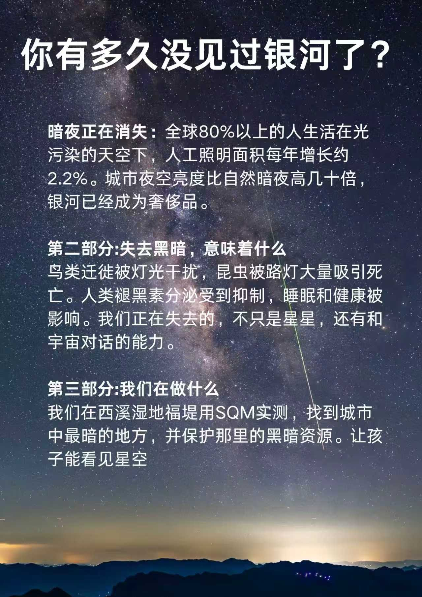
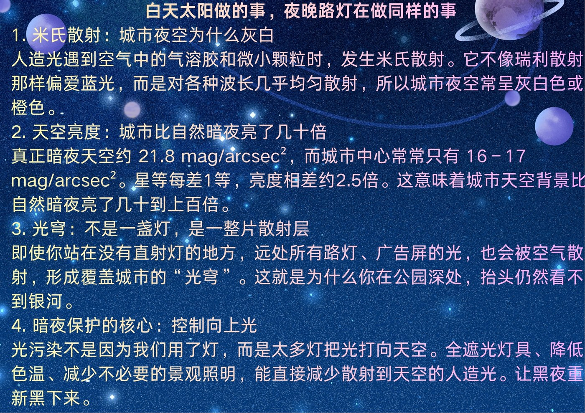

这一页是两份宣传材料的文字版。原版是图片，方便直接打印；这里做成网页，方便在手机上阅读、复制文字、或者由屏幕阅读器朗读。
两份材料都可以自由使用，不需要授权。图片版见「行动」页。
一、你有多久没见过银河了？

暗夜正在消失。
全球 80% 以上的人生活在光污染的天空下，人工照明面积每年增长约 2.2%。城市夜空亮度比自然暗夜高几十倍，银河已经成为奢侈品。
失去黑暗，意味着什么
鸟类迁徙被灯光干扰，昆虫被路灯大量吸引死亡。人类褪黑素分泌受到抑制，睡眠和健康被影响。
我们正在失去的，不只是星星，还有和宇宙对话的能力。
我们在做什么
我们在西溪湿地福堤用 SQM 实测，找到城市中最暗的地方，并保护那里的黑暗资源。
让孩子能看见星空。
二、白天太阳做的事，夜晚路灯在做同样的事

1. 米氏散射：城市夜空为什么灰白
人造光遇到空气中的气溶胶和微小颗粒时，发生米氏散射。它不像瑞利散射那样偏爱蓝光，而是对各种波长几乎均匀散射，所以城市夜空常呈灰白色或橙色。
2. 天空亮度：城市比自然暗夜亮了几十倍
真正暗夜天空约 21.8 mag/arcsec²，而城市中心常常只有 16–17 mag/arcsec²。星等每差 1 等，亮度相差约 2.5 倍。这意味着城市天空背景比自然暗夜亮了几十到上百倍。
3. 光穹：不是一盏灯，是一整片散射层
即使你站在没有直射灯的地方，远处所有路灯、广告屏的光，也会被空气散射，形成覆盖城市的「光穹」。这就是为什么你在公园深处，抬头仍然看不到银河。
4. 暗夜保护的核心：控制向上光
光污染不是因为我们用了灯，而是太多灯把光打向天空。全遮光灯具、降低色温、减少不必要的景观照明，能直接减少散射到天空的人造光。让黑夜重新黑下来。
使用说明
这两份材料面向公众，语言尽量平实，不预设读者有天文或环境背景。
- 可以自由使用。打印、张贴、转发、翻译都可以，不需要授权，也不需要署名。
- 不要改科学内容。其中的数值与机制有据可查，如果发现错误，欢迎指出。
- 图片版更适合打印。这一页是文字版，用于阅读、检索与引用。
联系与反馈：ronghui0202@gmail.com